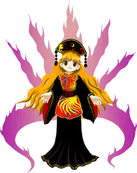

Ah là on attaque un gros morceau là. On va parler de mon personnage préféré du monde de la mort et de tout le reste. Junko
Elle est le Boss final venant du quinzième opus de la série de jeux "Touhou Project".
Basiquement elle veut envahir la Lune pour tuer une femme dont son mari a tué son fils parceque... Le Japon quoi.
Elle possède plusieurs pouvoirs dont celui de purifier tout est n'importe quoi à un tel stade que ça le ramène à un état divin mais aussi sans nom, elle peut inconditionnellement tuer une personne d'une puissance relativement élévée si cette dite personne a été bléssée une fois avant qu'elle rencontre Junko. donc inutile de dire qu'elle est pas là pour faire du trico non elle veut transformer les gens en kebab. Excusez moi je m'emporte.
Avec tout ça je vous ais pas montré sa frimousse donc la voilà. mignon non ?
Ce que j'aime bien avec ce personnage c'est qu'elle veut pas se la ramener en faisant des attaques jolies mais facile à esquiver nonononononon. ses attaques sont faites spécialement pour vous tuer un maximum même si cela sacrifie l'ésthétisme
Et en plus elle a un thème musical particulièrement agréable à écouter donc cela apporte un point bonus dans ma liste des points bonus.
C'est tout pour cette section si vous n'avez pas vu les autres sections alors allez dans le menu principal pour les voir en cliquant dans le lien si dessous
QUESTIONNAIRE BONUUUUUUUUUUUUUUS
Que pensez vous de Junko ?